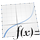

KDE Programme
Kubuntu Linux verwendet die Anwendungen des KDE-Projekts als Standard-Desktopumgebung.
KDE stellt eine Vielzahl von Applikationen für nahezu jeden Gebrauch zur Verfügung, gemein ist ihnen, dass sie auf dem Toolkit Qt basieren. Diese Seite soll einen Überblick über das breite Angebot an Anwendungen aus dem Hause KDE bieten, eingeteilt in verschiedene Kategorien und geordnet nach der Wichtigkeit und Aktualität der Programme.
Bei der Verwendung der Anwendungen ist zu berücksichtigen, dass manche bereits standardmäßig installiert sind, während andere nachträglich hinzugefügt werden müssen. In letzterem Fall kann es nötig sein, zusätzliche Paketquellen freizuschalten. Wer über diesen Weg auf der Suche nach dem gewünschten Programm oder Hilfswerkzeug nicht fündig wird, kann sich auf den Seiten von KDE-Apps.org  nach weiteren Applikationen umsehen. Eine andere nützliche Adresse stellt die Liste von Programmen in der KDE Userbase dar, an welcher sich dieser Wiki-Artikel orientiert.
nach weiteren Applikationen umsehen. Eine andere nützliche Adresse stellt die Liste von Programmen in der KDE Userbase dar, an welcher sich dieser Wiki-Artikel orientiert.
Hinweis:
Die Länderfähnchen geben an, in welcher Sprache die verlinkte Homepage des Programms gelesen werden kann. Dies hat nichts mit der Sprache des Programms an sich zu tun!
Internet und Netzwerk¶
Die KDE erleichtert die Nutzung der vielen Möglichkeiten, die das Internet bietet, durch eine große Auswahl an spezialisierter Software. Vom Webbrowser über den Instant Messenger bis hin zum Remote-Server helfen die Programme beim Austausch von Dateien und Informationen über das Internet.
| Webbrowser | ||
| Konqueror | mächtiger Webbrowser, ebenfalls verwendbar als Dateimanager und FTP-Client | |
| rekonq | moderne Alternative zu Konqueror basierend auf WebKit. | |
| Arora | junge, schlichte und plattformunabhängige Browseralternative, basierend auf QtWebKit | |
| Kommunikation | ||
 | Kopete | Instant Messenger mit Unterstützung für nahezu alle bekannten Protokolle |
| Quassel | moderner IRC-Client, der ein Client-Server-Modell zur Verfügung stellt | |
| Choqok | Micro-Blogging-Client mit Unterstützung für Dienste wie Twitter oder Identi.ca | |
| E-Mail und Nachrichten | ||
| KMail | E-Mail-Client, beherrscht POP3, IMAP und SMTP samt Verschlüsselung | |
| Akregator | Newsreader zur Betrachtung und Verwaltung von RSS- und ATOM-Feeds | |
| Dateiübertragung | ||
 | KTorrent | BitTorrent-Client mit vielen Funktionen, erweiterbar durch Plugins |
| KGet | Downloadmanager zur komfortablen Verwaltung von Downloads | |
| KMLDonkey | KDE-Oberfläche für den plattformunabhängigen P2P-Client MLDonkey | |
| Netzwerk | ||
| Krfb & Krdc | Remotezugriff mit Server (Krfb) und Client (Krdc) | |
| KDE Connect | Verbinden von mobilen Geräten mit dem Plasma Desktop | |
| Weitere und alternative Projekte | |||
| KFTPGrabber | FTP-Client | NetworkManager | Netzwerk-Verwaltung |
| KNode | Newsreader | Konversation | IRC-Client |
| KPhone | Internet-Telefonie | KPPP | Einwahlprogramm |
| KVpnc | VPN-Client | Kwlan  | WLAN-Manager |
| KNemo | Netzwerkmonitor | ||
Multimedia¶
Ein Audioplayer, ein Videospieler oder ein Brennprogramm dürfen auch in der KDE-Sammlung nicht fehlen und werden durch die kleinen und großen Multimedia-Applikationen ergänzt, mit denen sich der Desktop-Computer zum Media-Center umgestalten lässt.
| Audioplayer | ||
 | Amarok | leistungsfähiges Programm zur Wiedergabe und Verwaltung von Musik, Podcasts oder Internetradios |
| KsCD | einfacher CD-Player mit konfigurierbarem Erscheinungsbild | |
| Videospieler und TV | ||
| Dragon Player | minimalistischer Videoplayer mit bewusst schlichtem Funktionsumfang | |
| Kaffeine | Medienplayer für Audio- und Videodateien sowie für Fernsehen und Radiostreams | |
| SMPlayer und KMPlayer | alternative Benutzeroberflächen für den Medienspieler MPlayer mit einigen Zusatzfunktionen | |
| Brenn- und Ripping-Programme | ||
| K3b | benutzerfreundliche Anwendung zum Brennen und Rippen von CDs und DVDs | |
| KAudioCreator | einfaches Werkzeug zum Rippen von Audio-CDs und Konvertieren der Titel | |
| Weitere und alternative Projekte | |||
| JuK | Jukebox-Programm, Verwalten und Abspielen von Audiodateien | Kdenlive | Videoeditor |
| Kid3 | ID3-Tag-Editor | KMid | MIDI-/Karaoke-Player |
| KMix | Lautstärke-Regulierung | ||
Bildverwaltung¶
Ein Bild sagt oft mehr als tausend Worte und um einen Überblick über die persönliche Bildersammlung zu behalten, hat die KDE auch für diesen Bereich eine Reihe von nützlichen Programmen dabei. Auf diese Weise lassen sich Bilddateien betrachten, verwalten oder bearbeiten, auch für die Erstellung eigener Meisterwerke gibt es eine Lösung des KDE-Projekts.
| Bildbetrachter | ||
| Gwenview | schneller und benutzerfreundlicher Bildbetrachter | |
| Foto-Verwaltung | ||
| digiKam | fortschrittliche Anwendung für die Verwaltung von digitalen Fotos | |
| Grafikerstellung | ||
| Krita | Zeichen- und Bildbearbeitungswerkzeug mit CMYK-Unterstützung | |
| Karbon | Vektorgrafikprogramm | |
| KolourPaint | Malprogramm | |
| KSnapshot | Erstellung von Bildschirmfotos | |
| Weitere und alternative Projekte | |||
| Kbarcode | Strichcode-Erzeugung | KGraphviewer | DOT-Graph-Betrachter |
| KIconEdit | Icon-Editor | KPhotoAlbum | Foto-Verwalter |
| Kamerka | Webcam-Programm | Kamoso | Webcam-Programm |
Büro und Bildung¶
Für das Schreiben von Dokumenten, die Tabellenberechnung oder die Erstellung von Präsentationen bringt die KDE eine hauseigene Büro-Sammlung mit. Darüber hinaus stehen die verschiedensten Bildungsanwendungen zur Verfügung, die in der Schule oder im Studium weiterhelfen können.
| Office-Paket | ||
 | KOffice / Calligra | Sammlung von Büroanwendungen für Textverarbeitung, Tabellenkalkulation, Diagramme, Präsentationen u.a. |
| Dokumentenbetrachter | ||
| Okular | erweiterbarer Dokumentenbetrachter mit Unterstützung für diverse Text- und Grafikdateiformate | |
| Scannen | ||
| Skanlite | schlichte Software zum Einscannen und Abspeichern von Bildern in verschiedenen Dateiformaten | |
| Organisation | ||
 | KOrganizer | Kalender mit Aufgaben- und Merkzettelfunktion |
| KAddressBook | Kontaktverwaltung mit zahlreichen Details und hilfreichen Features | |
| KAlarm | zeitgesteuerte Ausführung beliebiger Programme | |
| KTimer | Weckprogramm | |
| KTeaTime | einfacher Countdown | |
| Berechnungen | ||
| SpeedCrunch | einfach zu bedienender Taschenrechner mit nützlichen Konfigurationsmöglichkeiten | |
|  | KmPlot | komfortables Zeichenwerkzeug für mathematische Funktionen |
| Wissenschaft | ||
| Kalzium | Periodensystem der Elemente mit umfangreichen Zusatzinformationen über die Stoffe | |
| Marble | schlichter, aber ausgereifter Desktop-Globus mit OpenStreetMap-Unterstützung | |
| KStars | Desktop-Planetarium mit anpassbarem Betrachtungsort, Tageszeit und Datum des Sternenhimmels | |
| Sprachen | ||
| KLettres | Hilfe beim Erlernen des Alphabets und der Aussprache einer fremden Sprache | |
| Weitere und alternative Projekte | |||
| KAlgebra | Mathe-Rechner | KBruch | Bruchrechnungsübung |
| KDing | Wörterbuch de-en | KGeography | Geographie-Training |
| Kig | Geometrieprogramm | Kile | LaTeX-Editor |
| Kiten | Japanisch-Training | KJots | Notizerstellung |
| KMyMoney | Finanzmanager | KNotes | Notizerstellung |
| Kooka | Scanprogramm | KPDF | PDF-Betrachter |
| KTimeTracker | Aufgabenverwaltung | Step | Physik-Simulation |
| Gally | Lernprogramm für Gebärdensprache | ||
Systemverwaltung und Werkzeuge¶
Neben dem bunten Angebot an Programmen aller Kategorien benötigt die KDE auch jene Applikationen, mit denen sich das System unkompliziert einrichten und verwalten lässt, oder die kleinen Helferlein, um schnell mal ein Archiv zu entpacken oder eine hilfreiche Information in den virtuellen Handbüchern nachzulesen.
| Systemkonfiguration und Paketverwaltung | ||
| System- Einstellungen | Kontrollzentrum mit den wichtigsten Dialogen für die Konfiguration des Systems | |
| Software-Verwaltung | Oberfläche für APT zur grafischen Paketverwaltung | |
| KUser | Einrichtung und Enfernung von Benutzerkonten und Benutzergruppen | |
| Partitionmanager | Verwaltung von Festplatten, Partitionen und Dateisystemen | |
| Systemüberwachung | ||
 | KSystemLog | einfach erweiterbares Werkzeug zum Betrachten wichtiger Logdateien |
| KInfoCenter | Informationen über die im Rechner verbaute Hardware, bietet die Suche nach einzelnen Bestandteilen an | |
| KSysGuard | übersichtliche Überwachung und Anpassung der laufenden Prozesse sowie Rückverfolgung der Systemlast | |
| Dateiverwaltung | ||
| Dolphin | standardmäßiger Dateimanager, entwickelt unter Berücksichtigung der einfachen Benutzbarkeit | |
| KFind | Werkzeug für die Suche nach speziellen Dateien oder Dateimustern | |
| Ark | Entpackung, Betrachtung oder Erstellung von Archiven in verschiedensten Dateiformaten | |
| Befehlseingabe | ||
| Konsole | Terminal-Emulator mit hoher Funktionalität und unzähligen Konfigurationsmöglichkeiten | |
| KRunner | grafischer Programmstarter mit Modulen zur Funktionserweiterung | |
| Editoren | ||
| Kate | fortschrittlicher Editor mit vielen Features, unter anderem Syntaxhighlighting | |
| KWrite | abgespeckte Variante des Standardeditors Kate, für Anfänger geeignet | |
| Sicherheit | ||
| Brieftasche | Verwaltung der Passwörter und Formulardaten von Anwendungen der KDE | |
| Sweeper | Entfernung von Spuren der Computernutzung wie den aufgerufenen Webseiten, Cookies, o.ä. | |
| Zwischenablage | ||
| Klipper | Zwischenablage mit temporärer Speichermöglichkeit für über 2000 Einträge | |
| Dokumentation | ||
| KHelpCenter | Dokumentationsbetrachter, mit dem sich die Handbücher der KDE-Programme durchstöbern lassen | |
| Weitere und alternative Projekte | |||
| KCron | Cron-Bedienung | KDiskFree | Datenträgerinformation |
| KSniffer | Traffic-Analyse | Yakuake | Terminal-Emulator |
Mehr Programme¶
Auch wenn diese Seite eine Übersicht der wichtigsten Anwendungen des KDE-Projekts liefert, gibt es selbstverständlich noch viele weitere interessante und unterhaltsame Programme, die für den K-Desktop geschaffen worden sind. Für alle Spielefreunde gibt es zum Beispiel eine separate Liste mit KDE-Spielen. Außerdem kann es natürlich immer vorkommen, dass man trotz aller zur Verfügung stehender Software auf ein Programm zurückgreifen möchte, das auf dem GTK-Toolkit basiert. Entscheidend ist, dass die Anwendung, egal ob GTK oder Qt, den persönlichen Ansprüchen gerecht wird und man Gefallen an deren Benutzung findet. Unterstützung bei der Verwendung von GNOME-Programmen unter KDE findet man auf der Wiki-Seite GTK+ Anwendungen unter KDE. Auf diese Weise lässt das Beste aus der Vielfalt von zwei parallel entwickelten Toolkits herausholen, fernab jeder unnötigen Rivalität.
 Übersichtsartikel
Übersichtsartikel- Erstellt mit Inyoka
-
 2004 – 2017 ubuntuusers.de • Einige Rechte vorbehalten
2004 – 2017 ubuntuusers.de • Einige Rechte vorbehalten
Lizenz • Kontakt • Datenschutz • Impressum • Serverstatus -
Serverhousing gespendet von